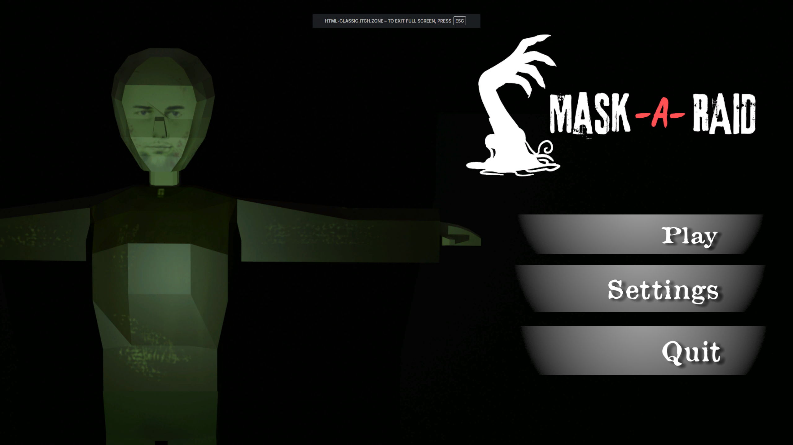

Games


Tusok at Tiyaga
About the game
A street food cooking simulator where the player experiences the hardships of being the sole breadwinner of the family. At the end of each week, the player is harassed by a loanshark to pay their debt or else... Unlock all classic Filipino street food and work you way out of debt!
My role and contributions
I programmed this game solo and also created all of the animations used. I also contributed to its main story concept and also came up with the game mechanics.



Mask-a-Raid
About the game
A thrilling game where the player plays as a father separated from his family during a zombie apocalypse. The player has to fight his way through zombies and other people who are also striving to survive and reach the extraction point.
My role and contributions
In this game, I contributed to buidling the game concept. Additionally, I created the AI script for the zombies. This includes idling and looking for target, chasing, attacking, and death. I also programmed the initial part of the game where the player has to be guided to find a knife for self-defense. Doing these, I contributed to making the game feel eerie and thrilling.


Deep Space Taver
About the game
A fun mix of futuristic 2D cooking with medieval 3D customer serving all-in-one. Expand the restuarant and remain open for as long as you can!
My role and contributions
I programmed the AI for the NPCs which includes the queuing logic, idling, finding a seat, ordering the food, emotions based on customer service, and many more. I also contributed to building the main game mechanics and story and environmental concept of the game. I also created the sky and poof VFX. Additionally, I created a few of the animations, both for UI and also the NPCs. Finally, I integrated all sciprts and ensured that that all worked correctly together.